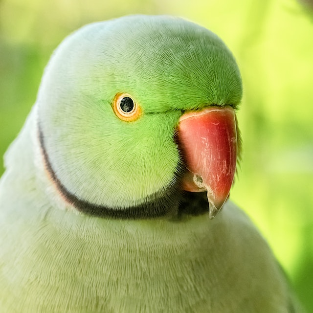

Periquito

Campeão de popularidade entre as aves domésticas, o periquito é um dos pets mais amados de todo o mundo! A ave, segundo pesquisas, é o pássaro mais escolhido na hora de adotar um novo pet. Esse pássaro é ideal para tutores de primeira viagem, uma vez que não é muito exigente.
Alegre e sociável, o periquito se destaca por sua inteligência. Por ser um bichinho bem “carente”, o ideal é que conviva com outros de sua espécie. Dessa forma, nunca se sentirá triste ou sozinho.
Com tantas opções de aves para ter em casa é fácil encontrar a espécie que combina perfeitamente com sua personalidade, não é mesmo? Os bicudinhos são incríveis e ótimas companhias. Temos certeza de que o seu lar será um ambiente muito mais agradável com a presença de um passarinho!